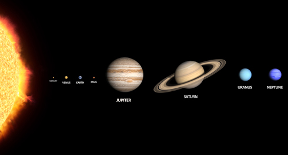
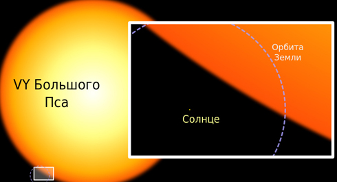

As Henry Ford said: “Whether you think you can, or you think you can't - you're right.”
Believe me or not, but every time you think or say that you cant do something or things are too complicated for you or you are not ready for something, this makes you weak. Now im not speaking about some mysterious theory about positive thinking when universe rewards your positive thoughts. The universe could not care less about you. If you have doubts, look at these pictures.
Seriously, universe works on its own way and I doubt that it cares about your positive or negative thinking. Look at the following picture and you will understand that:

Actually, our Sun is a "Yellow dwarf" and it is 1800-2100 (estimates varies) smaller then VY Big Dog, one of the biggest stars ever known to humanity. Take a look on another picture:

But as I said before, your thoughts can make you weak or strong. This is real fact and its bound connected with self-fulfilling prophecies. You can learn about this effect known as Rosenthal effect. But lets go back to our topic.
Our behavior is related to our perception of our own (our perception depends strongly on what other think about us). If we live in “healthy” environment, feeling love, care and support then we will be more confident. If environment is “hostile”, we lose our confidence gradually. Noteworthy, that we react due to our perception of this hostility, but not from hostile action itself. Harmless joke from your colleague can slump you in deep dejection, make more irritable. In some time you can even quit. Instead other, more confident will laugh on this joke and live happily ever after. Same situation can lead to different situations depending on our perception and behavior.
This was one side of the coin. Lets take a look on another one. Many young men hesitate to communicate with pretty girls. We wont search for reasons of this, but notice that they have already decided (!) they are not deserve for such girl. Of course, these men will act miserably. Have you ever been in such place or situation when you are out of sorts? If you were, you remember how you tried to act accordingly to your feelings .
Our brain is amazing thing. It can do not only negatives, but positive things too. I can show you great list of different characters, who reached success believing it with full heart (for example Ron Weasley and fake potion of luck in “Harry Potter and the Half-Blood Prince). But instead, remember some moments of your life when you felt that everything will be ok. And it really was, right?
But this is stick with two ends. Our thoughts affect on our actions. Likewise our actions affect our thoughts. When you are in low spirits - don’t despond, smile instead and see things in new light. Just try it. I believe your business will go up. Smile often, it’s useful skill.
I receive a lot of similiar letters from the visitors of my site. They say they are in bad shape, so wont go to make some street workout, instead train at home for some time. Unfortunately only few of them visit open workouts… That’s why I will tell you my own story.
I remember clearly my first steps in workout. It happened that I was only member in our team with no physical practice. Other guys practiced parckour and trained hard, but I played computer and tradable card games (and got some success in it). So I started form the very beginning (couple of pull-ups, no dips at all, etc.). But unlike others I was going to the spot and making my workout routines with everyone. The main point is to keep a healthy lifestyle, train with interesting people, share experience and have a good time. By the way, do you know that collective trainings are more affective then individual?
The first step Is the most difficult. You begin your new path, take a leap in the dark, guess what waits you ahead. But trust me your journey is worth to make this step!